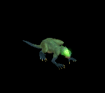

テイム可能ペット一覧
ビーストテイマーの「説得」やネクロマンサーの「死霊術」では全ての一般4以下モンスターがテイム可能とは限りません。一部のモンスターは「テイム対象外」として扱われいていることがあります。
逆に、狩場にはテイム専用モンスター呼ばれるモンスターも存在します。(リポップ時間が長めで沸き数が少ないのが特徴)
Zin系列のモンスターがほとんどで、通常のモンスターにはない様々な特殊攻撃をするモンスターもいます。
ミラーダンジョンにも出現することがあります。
2005/3～
※大抵のモンスター(一般4以下)はテイム可能。※テイム可能モンスターの見た目でまとめます。
2008/7/29～
| 名前 | 場所 | 画像 | 種族名 | 種類 | 等級 | レベル | 湧き時間 |
|---|---|---|---|---|---|---|---|
| 骸骨魔法師 | 呪いの墓Ｂ１ |  |
骸骨魔法師 Zin | アンデッド系 | 一般4 | 200～210 | 60分 |
| ホワイトゴルゴ | ハンヒ山脈 / ドレム川付近 |  |
ホワイトゴルゴ Zin | 動物系 | 一般4 | 270～275 | 20分 |
| ゴルゴン | ハイランド洞窟 B2 |  |
ゴルゴン Zin | 神獣系 | 一般4 | 295～300 | 上＆左（2時間） 右＆下（1時間55分） |
| さすらう傭兵 | スウェブタワー 17F |  |
さすらう傭兵 Zin | 人間系 | 一般4 | 330～335 | 60分 |
| 引導者 | 名も無い崩れた塔 B5 |  |
引導者 Zin | 悪魔系 | 一般4 | 330～340 | 60分 |
| スコフィールダー | フォーリン望楼地下 |  |
スコフィールダー Zin | 人間系 | 一般4 | 365～370 | 60分 |
| ボーンドラゴン | モリネルタワー1F |  |
ボーンドラゴン Zin | アンデッド系 | 一般4 | 370～375 | 60分 |
| カラフルトカゲ | スウェブタワー B4 |  |
カラフルトカゲ Zin | 動物系 | 一般4 | 380～390 | 左上（1時間40分） 左下（1時間45分）右下（2時間） |
| ジャックランタン | 暴かれた納骨堂 B3 |  |
ジャックランタン Zin | 悪魔系 | 一般4 | 406～410 | 60分 |
| 大骸骨 | 暴かれた納骨堂 B5 |  |
大骸骨 Zin | アンデッド系 | 一般4 | 416～420 | 60分 |
| 堕落オーガ | スウェブタワー B13 |  |
墜落オーガ Zin | 悪魔系 | 一般4 | 446～450 | 右上（2時間）左下（1時間30分） |
| ハイエルフ | ダークエルフ王宮 3F |  |
ハイエルフ Zin | 人間系 | 一般4 | 470～480 | 60分 |
| フロッグ | 呪いを受けたミズナの洞窟 B2 |  | フロッグ Zin | 動物系 | 一般4 | 534～534 | 1時間40分～2時間 |
| かまいたち | ビックマウスダンジョン B4 |  |
かまいたち Zin | 悪魔系 | 一般4 | 600～610 | 左下（1時間30分）中央上（2時間） |
| サキュバス | モリネルタワー 4F |  |
サキュバス Zin | 悪魔系 | 一般4 | 620～620 | 60分 |
| 時の旅人 | 時の森 |  |
時の旅人 Zin | 人間系 | 一般4 | 650～660 | 60分 |
| ユニコーン | 時の森 |  |
ユニコーン Zin | 神獣系 | 一般4 | 700～710 | 2時間 |
2009/3/17～
- 特定のクエスト進行時にテイム可能なペットがいるので、そのまとめ。| 名前 | 場所 | 画像 | 種族名 | 種類 | レベル | 湧き時間 | |
|---|---|---|---|---|---|---|---|
| アイドレースカル | ウエストスワンプ洞窟 | |
大骸骨 Zin | アンデッド系 | 一般4 | 210～220 | マップ10関連mob クエスト遂行者のみpop可能 |
| カラモスの魂 | ガディウス大砂漠 / デフヒルズ北側 | |
ボーンドラゴン Zin | アンデッド系 | 一般4 | 345～350 | ポーター10関連mob クエスト遂行者のみpop可能 |
2023/2/23～
6匹のペットが新規でテイムできるようになりました。あわせて、テイム関連の仕様変更がはいりました。
従来から存在するエリートペットが各種マップに5体ずつ配置されました。
エリートペットのリポップ時間が変更されました。

| 名前 | 場所 | 画像 | 種族名 | 種類 | レベル | 湧き時間 | |
|---|---|---|---|---|---|---|---|
| エリート生霊 | 近郊森/妖精たちの安息所 | エリート生霊 | 神獣系 | セミ１ | 700～725 | ||
| エリート呪術師 | 生命の森中心部 | エリート呪術師 | 神獣系 | セミ１ | 1035～1070 | ||
| 精鋭コネクター | 共同墓地 | 精鋭コネクター | アンデット系 | セミ１ | 850-900 | ヘクトルクエで通るマップ。 | |
| エリートラク | デフヒルズ渓谷の深い所 | エリートラク | アンデット系 | セミ１ | 850-900 | ガイドシステムLv851～直通。 | |
| 精鋭スミロドン | 近郊森/妖精たちの安息所 | 精鋭スミロドン | 動物系 | セミ１ | 1300-1350 | ヤティカヌ前提クエを進行する必要あり。 （Lv1250～） |
|
| エリートバンシー | 荒野の要塞 | エリートバンシー | アンデット系 | セミ１ | 875～925 |
その他
- 稀にシステム上のバグで本来テイム可能でないペットを連れ歩くことが可能になるケースも存在します。(例：バフォテイマ)- 転生専用ペットも併せてご参照ください。